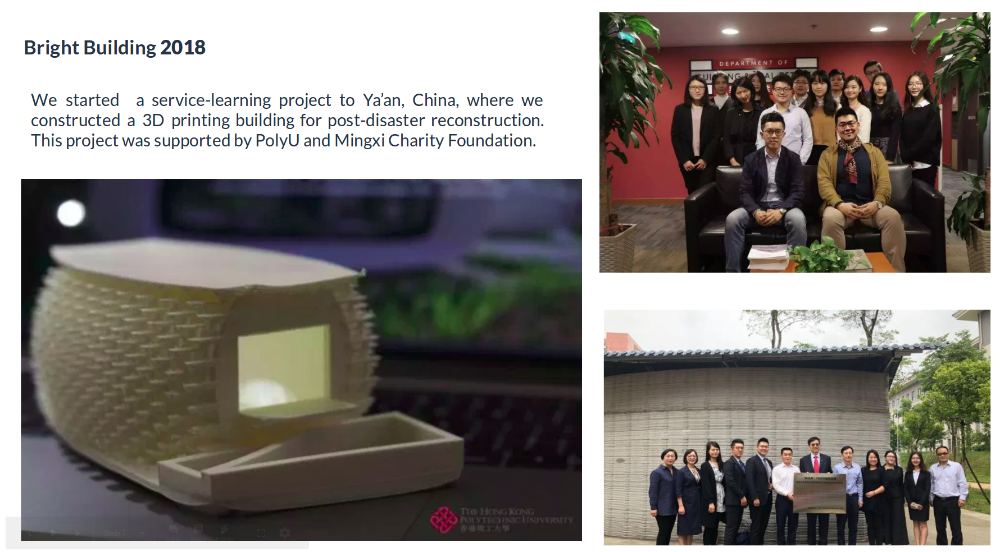

Low Resolution Face Recognition


I am a final-year student at the Hong Kong Polytechinic University, majoring in Electronic and Information Engineering. I interned in Robot Perception Lab at Carnegie Mellon University in the year of 2018. Prior to that I was a power electronics intern at ASM Pacific Technology.
I love building robots, and enjoy every moment of playing with them. I am intereted in robotics in genral, but mostly in robotic perception. My ultimate goal for research is to explore the intelligent embedded system and computer vision to develop a vision-based robot to improve people's livelihood.
Apart from study and research, I spent a lot of time on service-learning in my college life. My experiment of service-leraning started from a service-learning course to Cambodia in my freshman year. And in the following 2 years I acted as a student assistant to keep developing the village in Cambodia. I was also a team leader of a service-learning project to Ya'an, Sichuan, where we constructed a 3D printing building for post-disaster reconstruction. I am very grateful to Dr. Grace Ngai for taking me to the world of service-learning. She let me find the value as an engineering student and made me carefully consider what I should do to further contribute to our society.
© Copyright Jiawei Tang 2019